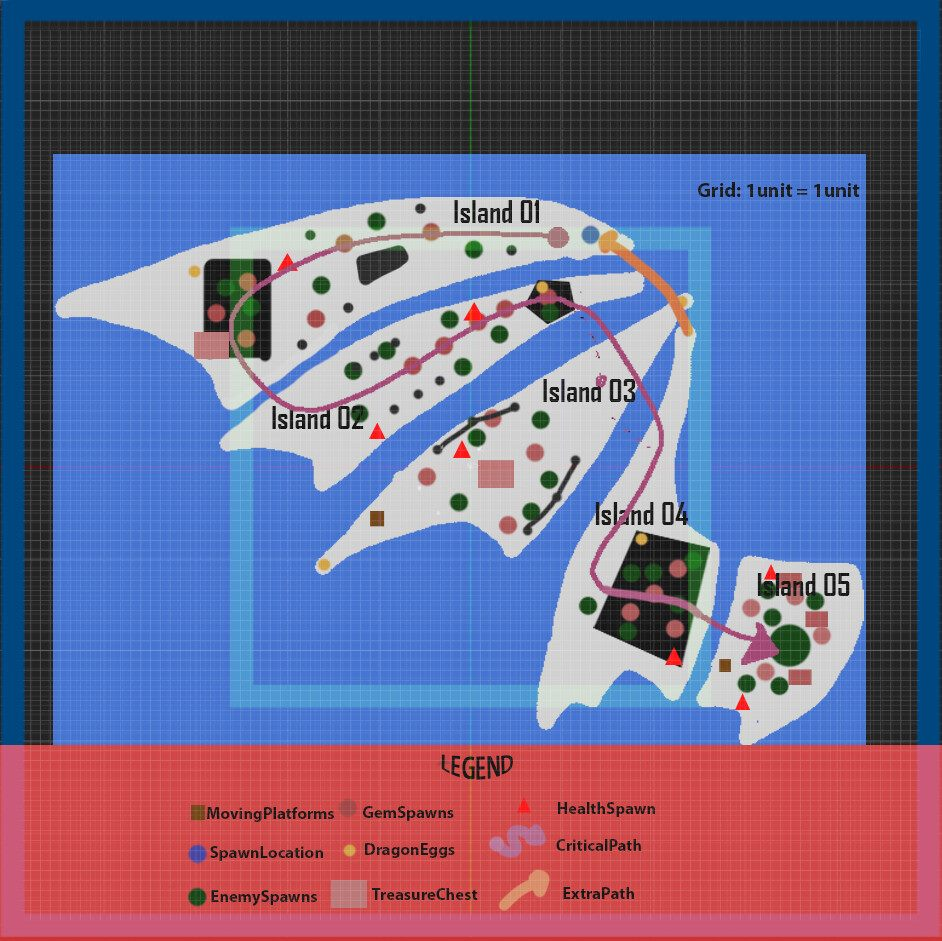
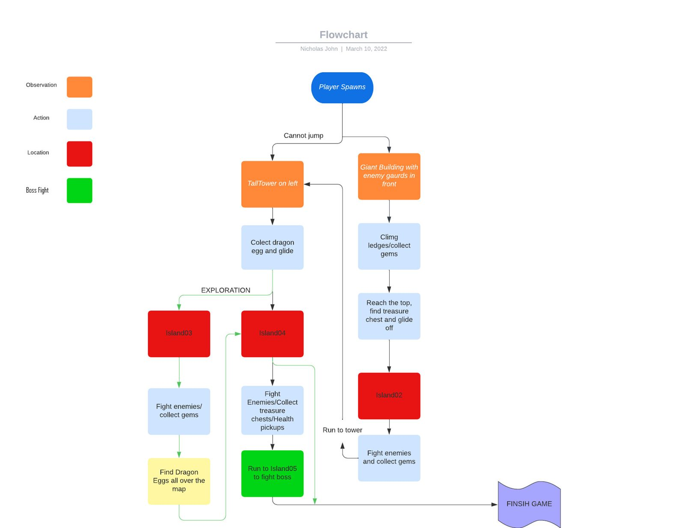
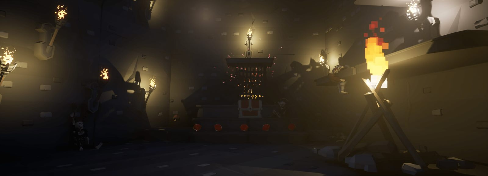
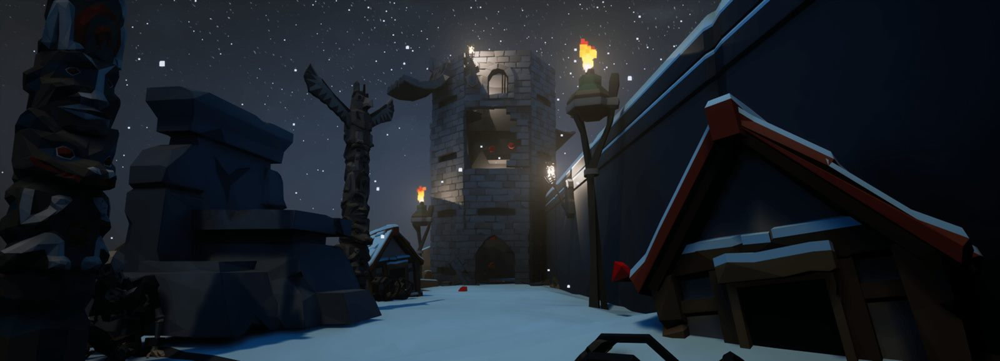
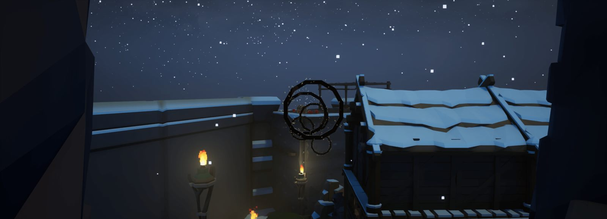
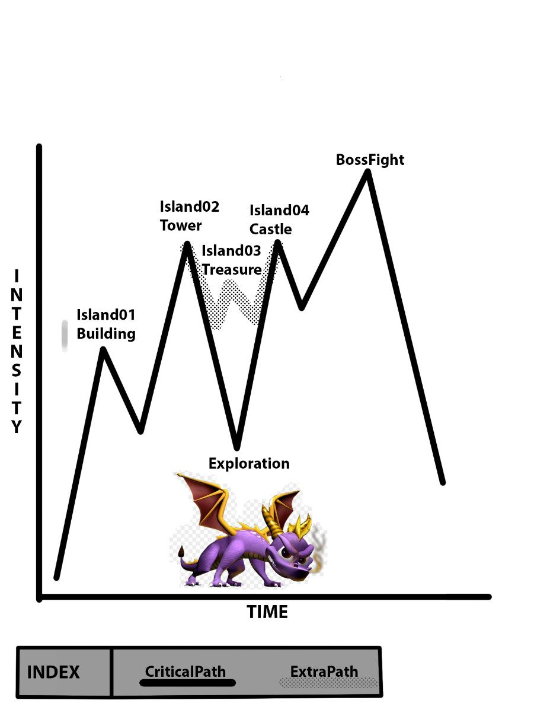
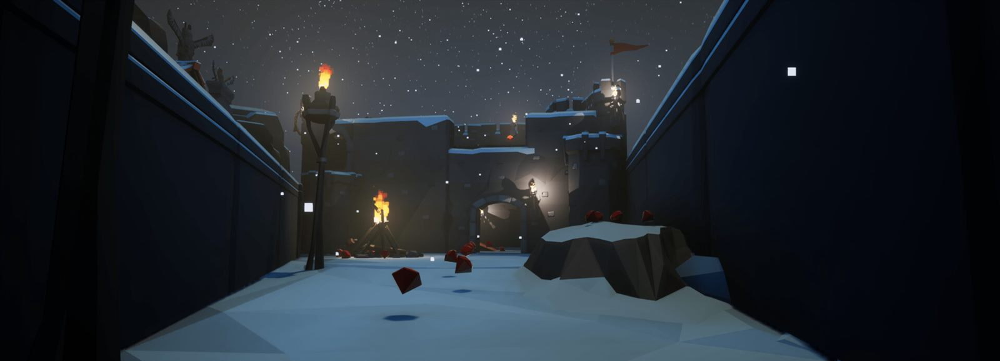

Breakdown
Spark: DragonWing
A fantasy platforming level inspired by Spyro, built on the Spark project in Unreal Engine 4. The challenge: make a long, rewarding level on a small map by building upward.
- Unreal Engine 4
- Action RPG
- Third person
- Platformer
Planning
Level brief
The player, Spark, starts on the edge of the first island. A trail of gems leads to a building, where ledges take them up to the roof and across to the second island. There, a tall tower, a group of enemies and more gems are waiting: players must defeat every enemy, collect every gem and climb the tower before they can reach the third island.
Design goals
- Get comfortable designing for third-person characters
- Build a long level on a small map by using height to my advantage
- Get a solid grip on the full level design workflow, from documentation to blockout to set dressing
- Practise basic level Blueprinting
2D layout

The level comprises of 5 separate islands which come together to represent a dragon’s wing. These islands can be accessed by gliding from one island to the other. Glide-able areas will only open after the players have successfully defeated the horde of orcs and reached a high enough place. The critical path is an intended path the player should take to speed run the course, but more explorative players can also explore the map first and finish the level later.
Level flow

Spaces
Combat spaces
Spark levels are meant to be combat-fests: players ram every enemy in sight for gems and rewards on the way to the end. The level encourages players to fight and explore every area to earn more.

Platforming areas
Platforming is the main way to get around the map, and some hidden areas and vantage points can only be reached by platforming.


Intensity chart

The intensity chart maps out which parts of the level players will feel as most intense. Island 01 eases players in so they can learn the level and mechanics. Island 02 and Island 04 ramp up as players battle large hordes of orcs for treasure chests and gems. Island 03 is a breather after Island 02, where players can explore for hidden treasure and gems. Island 05, the Boss Zone, is the most intense: players face two orc chieftains and their minions at once.
